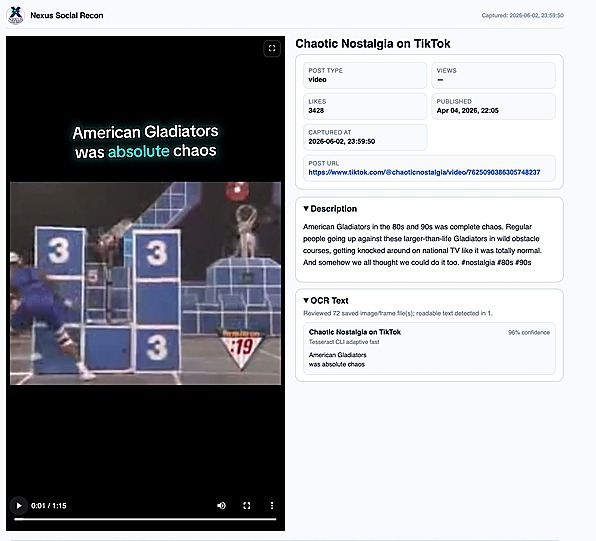

Preserve what is visible
Capture is directed by the investigator and limited to what an authorized user can see on screen. No background scraping.
Nexus Forensics Inc.
We build investigator-first software that preserves visible public evidence, connects the identities and signals behind a digital footprint, and delivers source-linked reports a reviewer can trust.
About Nexus Forensics
Nexus Forensics Inc. builds software for people who have to explain their evidence to someone else: investigators, analysts, and legal teams working from public online sources.
A digital footprint is more than a screenshot. It is the profiles, posts, comments, images, identifiers, and connections a person leaves across platforms. Our work is turning that footprint into an organized, source-linked case record that the investigator controls.
Our Philosophy
Nexus is designed around the confidence investigators need when evidence must be reviewed by someone else.
Capture is directed by the investigator and limited to what an authorized user can see on screen. No background scraping.
The investigator decides what enters the case, what deserves attention, and what belongs in the final report.
Core desktop workflows can keep case data on the investigator's workstation or organization-controlled storage.
Potential matches include supporting context, thumbnails, links, and confidence information instead of an unexplained result.
Every finding stays tied to its source URL, local file, hash, and timestamp, so a reviewer can follow it back to the original.
Visible, user-directed workflows help keep collection focused on what an authorized investigator sees and selects.
Our Methodology
Every Nexus workflow follows the same five steps, so the record stays understandable from collection through review.
Review visible public content in real time through the standard platform view.
Preserve selected screenshots, visible details, source URLs, and local evidence.
Use OCR, keywords, bookmarks, and visual comparison to identify relevant material.
Compare identifiers, User Index links, media details, and local case signals.
Produce source-linked reports with notes, thumbnails, hashes, and manifests.
Our Product
Preserve visible public social evidence, review it with OCR and visual comparison, connect recurring identifiers, surface prior captures, and produce structured case reports.

Digital Footprint Intelligence
An investigator-first public evidence intelligence platform for capture, case management, local analysis, matching, indexing, and source-linked reporting.
Built for Investigative Work
The evidence workflow stays consistent while the operational language, review requirements, and reporting expectations change by audience.
Preserve time-sensitive public evidence and create clear case records within investigator-led, agency-controlled workflows.
Organize online and witness evidence for litigation, internal review, due diligence, and incident response.
Move faster from discovery to documented findings without assembling every evidence report by hand.
The Direction
Nexus is growing from a single-workstation investigation platform toward shared local intelligence, small-team collaboration, NAS repositories, on-prem servers, and managed deployments. Premium capabilities stay separated from basic capture so agencies can adopt the level they need.
Contact
Ask about public-source workflows, platform coverage, local indexing, reporting needs, and deployment options.
For purchases of more than two licences, please contact sales.
Email salesSee Nexus Social Recon work through a capture, review, and report on a case that looks like yours.
Request a walkthroughTalk to Nexus Forensics about public-source workflows, platform coverage, local indexing, reporting needs, and deployment options.